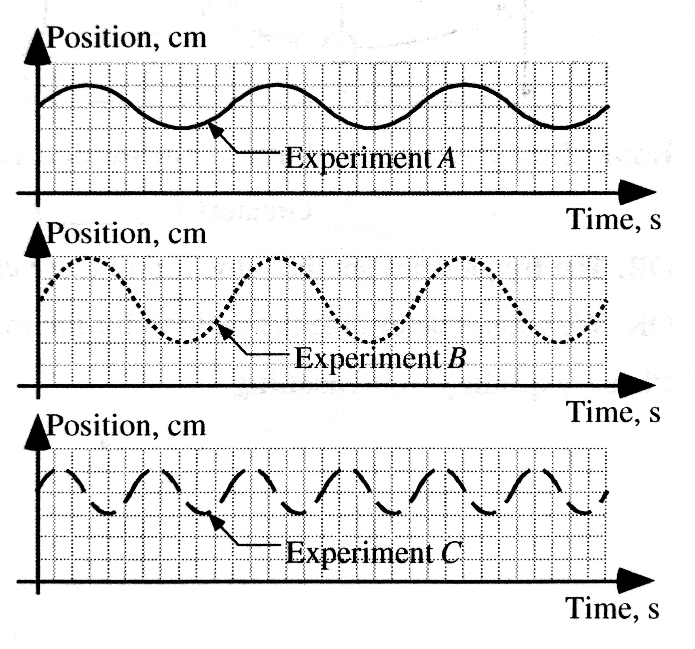

layout: true <div class="my-header"><img src="../figures/scsdLogo.png" style="height: 70px;"/></div> --- class: center, middle .title[Simple Harmonic Motion] .subtitle[A Model for Oscillation] .author[üë®ü誂Äçüè´ Nathan Porter] .institution[üè´ Maple Hill High School] .coauthor[] .institution[] .date[üìÖ 2020] .center[] --- background-image:url(https://media.giphy.com/media/oYrTyALVawKcw/source.gif) #Periodic Motion - Any motion that repeats itself -- - Oscillation - periodic motion of something moving back-and-forth ??? Pendulums of bowling balls have slightly different quantities that allow them to have different periods Examples: A rocking chair, a swing, the pendulum of a grandfather clock, the strings on a guitar, the wings of a mosquito all oscillate. At the atomic level, atoms oscillate inside solids. At the cosmic level, the entire universe may oscillate in an ever-repeating cycle of expansion and contraction. --- #Vibrational Motion -- ####Equilibrium Position The position at which a vibrating object resides when not distrubed. When resting at this position, the sum of the forces that other objects exert on it is zero. During vibrational motion the object passes back and forth through its position from two opposite directions. -- ####Restoring Force When an object is displaced from equilibrium, some other object exerts a force with a component that always points opposite the direction of the vibrating object's displacement from equilibrium. This force tends to restore the vibrating object back toward equilibrium. --- #Vibrational Motion ####Amplitude The amplitude of a vibration is the maximum displacement of the vibrating object from its equilibrium position. --- #Vibrational Motion ####Period The period `\(T\)` of a vibrating object is the time interval needed for the object to make one complete vibration--from clock reading when it passes through a position while moving in a certain direction until the next clock reading when it passes through that *same* position moving in the *same* direction. Unit of period is the second. -- ####Frequency The frequency `\(f\)` of vibrational motion is the number of complete vibrations of the system during one second. The frequency is related to period: $$f = \frac{1}{T} $$ The unit for frequency is the hertz (Hz), where 1 Hz = 1 vib/s = 1 s`\(^{-1}\)` --- #Vibrational Kinematics ####Draw on a whiteboard the position vs. time, velocity vs. time, and acceleration vs. time graphs for your oscillating mass. #PAUSE THE VIDEO AND DO THIS BEFORE MOVING ON! --- ####[Kinematics](http://physics.bu.edu/~duffy/HTML5/mass_on_spring_graphs.html) <iframe style="width: 100%; height: 90%; overflow: hidden;" src="http://physics.bu.edu/~duffy/HTML5/mass_on_spring_graphs.html" width="100" height="100" scrolling="no">Iframes not supported</iframe> --- #Simple Harmonic Motion Defined as periodic motion that produces a sinusoidal position vs. time graph. -- Or another textbook definition: *A object executing simple harmonic motion is subject to a linear restoring force that tends to return the object to its equilibrium position and is linearly proportional to the object‚Äôs displacement from its equilibrium position.* -- AP Equation: $$\boxed{x = A \cos(2\pi f t)}$$ Also: `\(\omega = 2\pi f\)` so `\(x = A \cos(\omega t)\)` ??? `\(\omega\)` is the angular speed, but in terms of SHM we refer to it as the angular frequency This is NOT the same as frequency -- can think of it as the radian equivalent -- cycles to radians, remember your circle (1 circle is 2 pi radians) --- ####[Energy](http://physics.bu.edu/~duffy/HTML5/mass_on_spring_energy.html) <iframe style="width: 100%; height: 90%; overflow: hidden;" src="http://physics.bu.edu/~duffy/HTML5/mass_on_spring_energy.html" width="100" height="100" scrolling="no">Iframes not supported</iframe> --- #Spring Dynamics ####Period: $$ \boxed{T_s = 2\pi \sqrt{\frac{m}{k}}} $$ -- ####Frequency: $$ f_s = \frac{1}{2\pi} \sqrt{\frac{k}{m}} $$ --- #Simple Harmonic Motion Simple harmonic motion is typified by the motion of a mass on a spring when it is subject to the linear elastic restoring force given by Hooke's Law. --- class:photoback background-image:url(https://i.giphy.com/media/KrzvaTeFSvUk0/giphy.webp) #Pendulum: -- ####Does a pendulum fit into our vibrational motion model? -- ####What would the damping force be? -- ####What factors would affect the period? --- class:photoback background-image:url(https://i.giphy.com/media/KrzvaTeFSvUk0/giphy.webp) #Period of a Pendulum Possibe Factors: -- - Gravitational field strength -- - length of string -- - mass of bob ??? Ask these questions, and pause. --- class:photoback background-image:url(https://i.giphy.com/media/KrzvaTeFSvUk0/giphy.webp) #Period of a Pendulum Possibe Factors: - Gravitational field strength - length of string - ~~mass of bob~~ -- #`\(\boxed{T_p = 2\pi \sqrt{\frac{\ell}{g}}}\)` --- #What about Friction? - Would you masses in lab oscillate forever? -- - Does this change the period? -- - How would the position vs. time graph change? -- - This idea is called ***damping*** --- ####[Damping](http://physics.bu.edu/~duffy/HTML5/mass_on_spring_damped.html) <iframe style="width: 100%; height: 90%; overflow: hidden;" src="http://physics.bu.edu/~duffy/HTML5/mass_on_spring_damped.html" width="100" height="100" scrolling="no">Iframes not supported</iframe> ??? Damping will just decrease the the amplitude, but not change the Period --- #Test Yourself: The figures below show systems containing a block resting on a frictionless surface and attached to the end of a spring. The springs are stretched to the right by a distance given in each figure and then released from rest. The blocks oscillate back and forth. The mass and force constant are given for each system. .center[<img src="../figures/Masshorzspring.jpg" width = "800 px"/>] **Rank the systems on the basis of the frequency of vibratory motion.** ??? Answer: Looking for smallest fraction of m/k, so A > B > D = E > C > F --- **Test Yourself:** A frictionless cart of mass `\(m\)` is attached to a spring with spring constant `\(k\)`. When the cart is displaced from its rest position and released, it oscillates with period `\(T\)` that is given by `\(T = 2 \pi \sqrt{\frac{m}{k}}\)`. The graph of the position of the cart as a function of time is shown below for Experiment A. Graphs for two other experiments are shown below this. The same spring is used in all three experiments. .left-column[] .right-column[Compared to Experiment A, in Experiment B the cart has: 1. twice as much mass 2. four times as much mass 3. one-half the mass 4. one-fourth the mass 5. the same mass ] ??? Answer: Same mass, same period, different amplitude, so it had a different initial displacement! --- **Test Yourself:** A frictionless cart of mass `\(m\)` is attached to a spring with spring constant `\(k\)`. When the cart is displaced from its rest position and released, it oscillates with period `\(T\)` that is given by `\(T = 2 \pi \sqrt{\frac{m}{k}}\)`. The graph of the position of the cart as a function of time is shown below for Experiment A. Graphs for two other experiments are shown below this. The same spring is used in all three experiments. .left-column[] .right-column[Compared to Experiment A, in Experiment C the cart has: 1. twice as much mass 2. four times as much mass 3. one-half the mass 4. one-fourth the mass 5. the same mass ] ??? Answer: The period of C is 1/2 of A. So the mass needs to be smaller, but not 1/2 as small because of the square root! It needs to be 1/4 as small! --- **Test Yourself:** A frictionless cart of mass `\(m\)` is attached to a spring with spring constant `\(k\)`. When the cart is displaced from its rest position and released, it oscillates with period `\(T\)` that is given by `\(T = 2 \pi \sqrt{\frac{m}{k}}\)`. The graph of the position of the cart as a function of time is shown below for Experiment A. Graphs for two other experiments are shown below this. The same spring is used in all three experiments. .left-column[] .right-column[Suppose that for a fourth experiment (Experiment D), the mass used in Experiment A was doubled and the spring was replaced with a spring with double the spring constant. The period in Experiment D would be: 1. the same as the period in Experiment A 2. double the period in Experiment A 3. four times the period in Experiment A 4. one-half the period in Experiment A 5. one-fourth the period in Experiment A ] ??? Answer: Remain the same! You would have the same fraction in the square root!